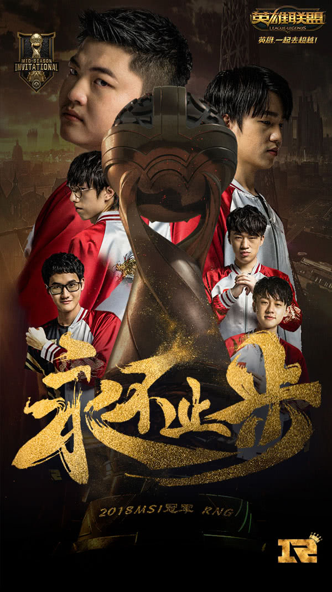

RNG：浮沉多年不改志 得偿所愿终夺冠
官方 时间： 2018-05-21 17:52:46
5月20日，RNG在2018季中冠军赛总决赛中3:1力挫KZ，时隔三年，再度为LPL赛区捧回了这座分量极重的世界冠军奖杯。作为赛区历史中发展曲折的一支队伍，RNG的此次登顶，也向全球展现着以其为代表的LPL赛区，在国际赛场上强而有力的竞技水准。但冠军之功并非朝夕得来，正如诸多有着悠久历史的战队，RNG这支战队同样也曾逃不开因状态发挥而影响团队战绩的命运。但在破除了绝大多数障碍之后，就是这样一支队伍，在2018年5月20日的巴黎，这个极具浪漫气息的时间与地点，为LPL的支持者们，奉上了一份充满爱意的礼物。
图1：RNG创造团队历史 首次斩获国际大赛冠军
图2：Royal Never Give Up RNG是NO.1
时隔1106天，这是LCK队伍再次在国际赛场BO5的比赛上，输给了其他赛区队伍。这一次，将韩国队伍赶下王座的，是一支由“五个中国人”所组成的，同仇敌忾的RNG。
众所周知，心态是一支队伍保持竞技状态至关重要的因素。心态的变化，极大程度上会影响比赛竞技水平的发挥，让比赛充满着不可预知的变数，此前的RNG就曾经历过结局被逆转的“噩梦”。
图3：2017LPL夏季赛总决赛 RNG被EDG让二追三逆转败痛失冠军
在2017年LPL夏季赛总决赛上，RNG与EDG鏖战五局，以先胜的优势，被对手让二追三截获了冠军。同年的10月28日，《英雄联盟》全球总决赛半决赛首日对抗，LPL赛区战队RNG与LCK赛区战队SKT打满五局，同样以2-3的失利战绩，不敌老对手SKT，无缘总决赛
图4：RNG在LPL春季赛小组赛阶段连吞四败 打野Mlxg放空望天的懵状态
从战队历经多次大赛皆以憾负战绩而败北的历史教训中，RNG明白了心态问题是比赛的致胜关键。深谙此理的RNG，在2018年LPL新赛季，将拥有丰富大赛经验的中国女排队心理辅导老师请入队中，对选手进行长期随团的集体心理辅导。从结果上来看，RNG在2018LPL春季赛及《英雄联盟》季中冠军赛中，赛事对抗的心理辅导成效，颇为显著。
图5：RNG的AD选手Uzi竞技状态稳如山 渴望挑战
作为一支以“下路AD为核心”的战队，状态持稳的Uzi，始终是RNG重中之重的核心选手。在“四保一”战略布局的背景下，其他位置选手的发挥则侧面影响着战局走向，成为比赛的胜负关键。在明白此点的状况下，RNG教练组尤其是主教练Heart，顶着重大的执教压力，通过比赛中精彩的临场变阵，让六位选手最大化地激发出了自身潜力，克敌致胜。
图6：RNG现任总教练 孙大永 Kezman
图7：RNG现任主教练 李官炯 Heart
首先是Letme。在2018季中冠军赛中，除AD选手以外的各线对位皆有闪光点，尤其以上单Letme的发挥最为亮眼。Letme以日益精进的抗压对线能力，无论祭出坦克英雄还是战士英雄，都能在上路的对线上，拖住与之交锋的各赛区对手，让其无暇分身去做团队支援Gank。即使是以上单优势而闻名的LCK赛区，Letme也能一以贯之地去对线，无论各赛区上单选手的水平如何，Letme都能平等对待，赛后更被粉丝们冠以“众生平等”型上单的褒奖。
图8：RNG上单选手Letme在与FNC对阵的半决赛 凭借亮眼表现斩获BO5 MVP
Letme在上单对位的亮眼表现，除了与LPL赛区多以上单抗压为主的风格有关，更大程度是因为RNG对团队成员的心态调整做足了文章。从季中冠军赛的赛后采访均可看出，选手们的发言都是保持着积极正面，平稳不躁的乐观态度。反观积极乐观的心态，也能极大程度地鼓舞选手自己，从而凝聚战队士气，成为RNG在追逐胜利道路上的一剂强心针。
图9：RNG的双打野Mlxg&Karsa为队伍带来了多样化的战术体系
除了状态极稳的Uzi，亮眼发挥的Letme，打野位置的两兄弟Mlxg和Karsa，也有着同样不俗的出色表现。在季中冠军赛小组赛阶段对阵FW时，Karsa一改此前在LPL对阵中的维稳风格，祭出了强势英雄男枪，多次入侵反野的行为令老东家FW几近崩溃;在季中冠军赛总决赛对阵KZ时，Karsa的蝎子配合团队策略，支援队友集火针对KZ的各线英雄，将KZ阵容的起势时间成功拖延。在季中冠军赛总决赛来临之前，采取了双打野轮替战术的RNG，主教练Heart派出风格更为疾风骤雨的Mlxg，来帮助RNG争夺小组出线权。就比赛结果而言，作为团队矛与盾的Mlxg与Karsa，在此次国际大赛中，皆出色地完成了自己的个人任务。
图10：表现出色的Xiaohu和Ming成为Uzi夺冠路上的左膀右臂
心态调整最好的结果，就是能随着比赛的变势而做出临场应变，Xiaohu和Ming这两名选手在这方面则表现得尤为不错。
Xiaohu在选出纯辅助英雄对团队“四保一”助力不大的情况下，也能根据主教练Heart的B/P策略，选出玛尔扎哈及吸血鬼等英雄，从控制技能与AP伤害加成等方面来帮助团队打开局面;而Ming则因为首次登上季中冠军赛的国际舞台，从小组赛初期紧张到操作略有失误后，通过及时的心态调整，稳住发挥，Ming的进步也让Uzi的对线局势越来越顺。
纵观《英雄联盟》季中冠军赛四年的历史记录，冠军头衔三次易主。从2015年LPL赛区EDG战队创造历史地夺冠，到2016-2017两年，LCK赛区的SKT一家独霸，再到2018年，冠军又回归到LPL赛区。RNG在2016年经历了被SKT压制，以1:3无缘季中冠军赛总决赛，仅摘获季军头衔;蛰伏两年，在2018年，最终以3：1力克LCK赛区KZ战队，成功夺冠。2018年，RNG在季中冠军赛的成功经验，将为LPL赛区各战队的发展提供参考
图11：2018季中冠军赛总决赛现场
对于多年不敌LCK赛区，但始终保持着极大夺冠热情的LPL，官方解说wAwa曾这样期许着LPL战队：“我们一定会重返赛场。请大家相信，一定会有更强的队伍代表中国出征《英雄联盟》国际赛。”就在2018年中，RNG战队做到了。
历时六年，Uzi率领五名队友，凭借着快速的心态调整和极佳的竞技水平，于2018年为RNG摘获首个国际大赛冠军，撼动了LCK赛区此前在季中冠军赛的统治地位。Uzi在季中冠军赛夺冠的赛后感言称：“我觉得获得国际大赛的冠军，是我六年来最大的目标。今天，我完成了!我终于……终于得到了!这是我最好的一次，也是我们团队最好的一次。”而Letme则表示：“我觉得自己表现得挺好的，我最大的信念就是想赢。谢谢Uzi，他辛苦了，我的目标就是帮助Uzi完成他的目标。”
图12： 不向心魔低头，只为冠军而来的RNG当家核心选手Uzi
诚如Uzi所言，现在的RNG，克服了长久的心魔困扰，着眼于纯粹的夺冠信念，朝着更好的自己在不断迈进，更加团结而自信。而LPL赛区每支战队也在相互学习，共同成长，积极自信地迎接不久将至的《英雄联盟》全球总决赛的挑战，致力于为LPL赛区争取荣耀，创造历史。
图13：RNG与Uzi为下一个冠军而战 永不止步
2018上半年，回顾RNG的成长史，是一段曲折向上的冠军路。从LPL春季赛冠军到《英雄联盟》季中赛冠军，从中国走向世界，浮沉多年终不改志，得偿所愿连获冠军。下半年，《英雄联盟》全球总决赛大幕开启，祝愿RNG砥砺锤炼，再创佳绩。LPL的未来，将如Uzi采访所言：“我的下一个目标，当然是2018《英雄联盟》全球总决赛冠军，但我更希望RNG这个团队，无论输赢，都能团结在一起，继续走下去。”无论前路如何，同希望LPL赛区也能团结一心，向着更好的未来前进。《英雄联盟》将与广大玩家共同关注。英雄，一起去超越!
热帖
- 1.讨论ＲＮＧ止住颓势，小明表现亮眼
- 2.上海龙之队40连败，何时能取得胜利
- 3.PUBG中国邀请赛,4AM能否卫冕
- 4.dota获得胜利，为什么欢呼声这么少
- 5.中国体育总局签字为何这么慢

竞迹娱乐 | 服务条款 | 广告服务 | 竞迹电子招聘 | 竞迹客服 | 游戏地图 | 竞迹平台 | 商务合作 | 网站导航s
COPYRIGHT © 2018 – 2019YINGWEILI. ALL RIGHTS RESERVED.
积极健康的游戏心态是健康游戏的开端。请您合理控制游戏时间，避免沉溺游戏影响生活，注意自我保护，防范网络陷阱。
健康游戏忠告：抵制不良游戏，拒绝盗版游戏。注意自我保护，谨防受骗上当。适度游戏益脑，沉迷游戏伤身。合理安排时间，享受健康生活。
发表评论